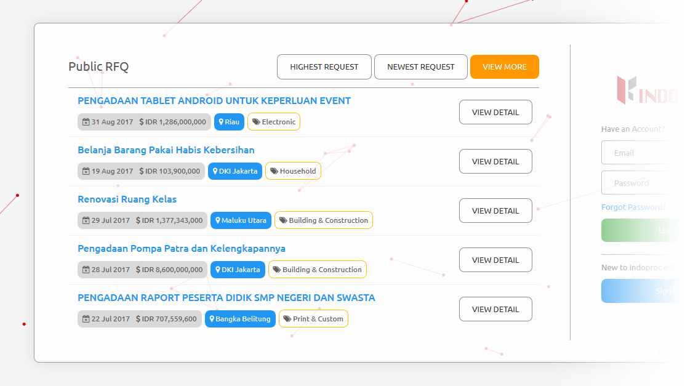
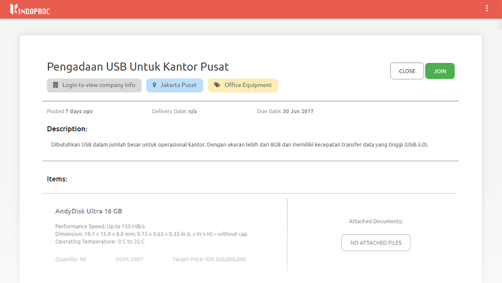
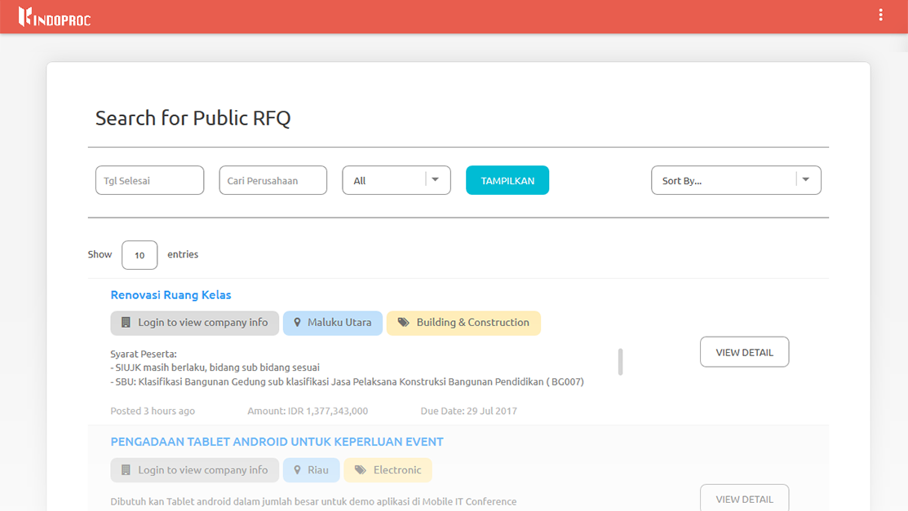
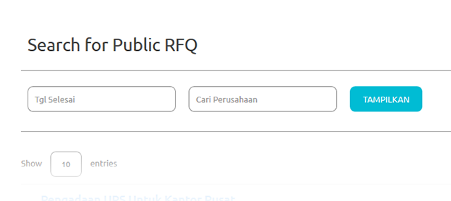
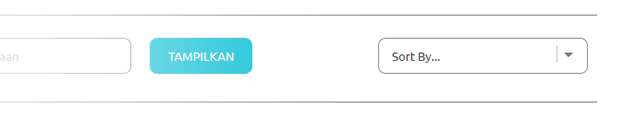

Public RFQ¶
Public RFQ can be accessed by public.
Finding Public RFQ¶
You can find/view the public RFQ from these options:
Before Login¶
Public RFQ can be viewed before login, but to join or create the quotation login/register is a must.
Login Page

{kind=link}
- Public RFQ showed at the left section of the login page
- Please note that only 5 top RFQ’s will be shown.
- To view more public RFQ list, you can click the ‘View More’ Button to Open Public RFQ Page
- These are the actions you can do:
- View top 5 Latest RFQ
You can view the top 5 latest RFQ by clicking the ‘Newest Request’ Button
- View top 5 Highest RFQ Estimated Price
You can view the top 5 highest RFQ price by clicking the ‘Highest Request’ Button
- View details of the public RFQ

- You can view the details of the Public RFQ by clicking the public RFQ title or click the ‘View Detail’ button
- Join RFQ
You can join the RFQ after you login/register, so you’ll be automatically redirected to the register page after clicking the ‘Join’ button
{kind=link}
{kind=link}
Public RFQ Page:

{kind=link}
- Public RFQ Page can be accessed by clicking ‘View More’ button at the login page, or click this link
- These are the actions you can do:
- Filtering the Public RFQ List

- You can filter the Public RFQ list by enter the due date and/or the client company (who created the RFQ) name
- Click ‘Show’ button
- Sorting the RFQ List
You can sort the Public RFQ list by choosing the type of sort:
- Amount (from highest or lowest)
- Posted Date (from latest or oldest)
- Company Name (ascending or descending)
- View details of the public RFQ
- Join RFQ
You can join the RFQ after you login/register, so you’ll be automatically redirected to the register page.
{kind=link}
{kind=link}
{kind=link}